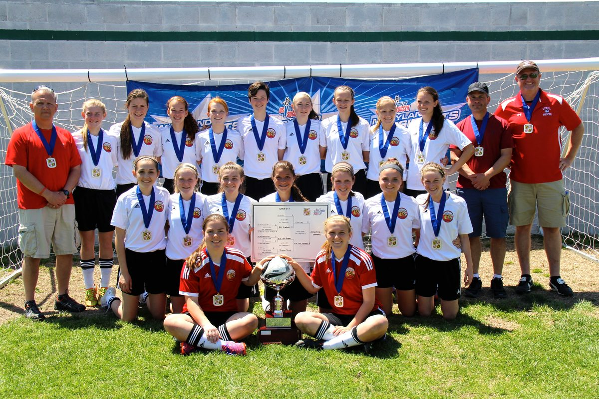
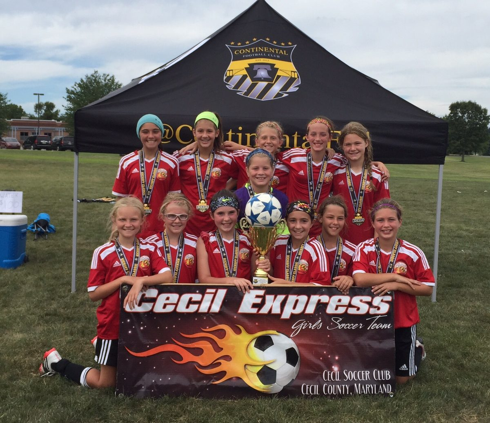
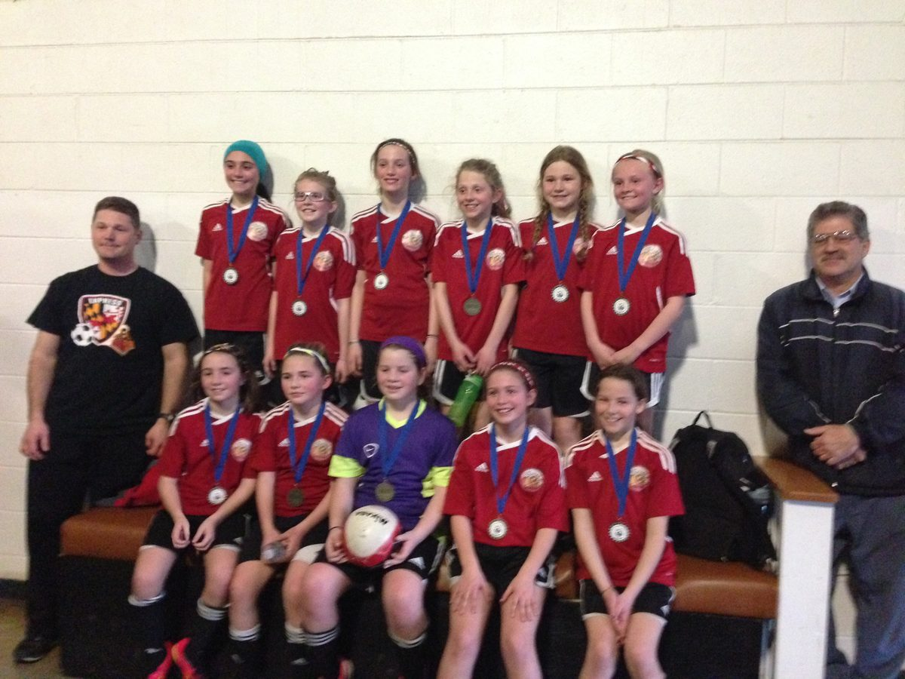
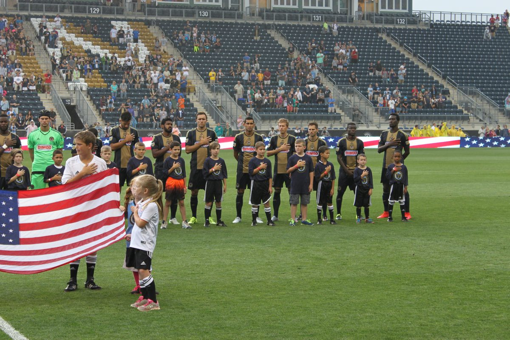
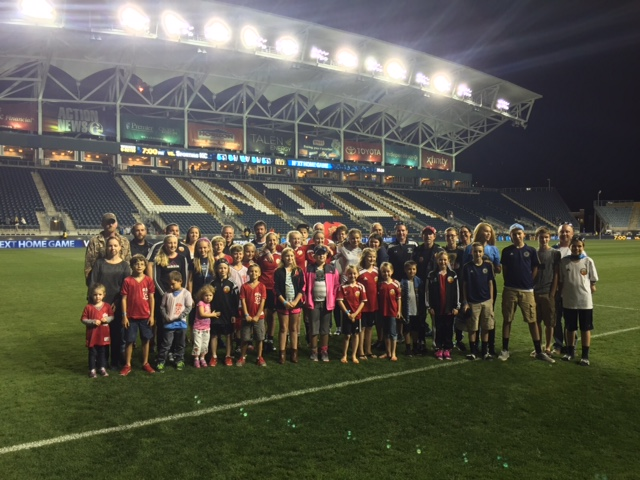

Cecil FC through the years






More photos are on the cecilsoccer.org pictures page, Facebook, and Instagram.
Teams, volunteers, and special events from around the league.





More photos are on the cecilsoccer.org pictures page, Facebook, and Instagram.